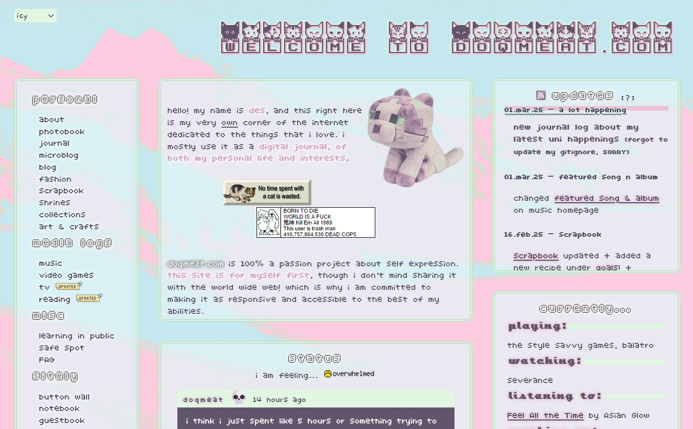

a place for me to showcase my previous layouts and my thoughts on them! click on the imgs to open them on a new tab.
02.mar.25 - ???

i have been dying to re-do my homepage. man i just miss having a bit of a more fun layout so much with different graphics here and there and more colors. i also removed a bit of bloat that my previous homepage had. i was very inspired by these super cute memos scanned by kawaiiscans. i actually wanted the homepage to be built by graphics from those memos but then as i was editing up the png i thought it would be too much. only one of those pngs stayed which is the one you see next to the notepad.

i wanted this homepage version to feel a bit more natural and personal to me. which is why it kinda feels like if you were looking at things around a desk. a memo, a notepad, an mp3 player, and a random instant picture.
the part i had the most fun building was the mockup walkman mp3 player which shows what song i last listened to using bianca's last.fm widget code, it is done purely in CSS which was of course the fun part. i've actually had this idea of making a mockup mp3 player and have it function as a music player with old songs i used to listen to on my very own walkman mp3 player when i was little. also want to clean it up a bit and have it as a code bit people can use it on their site. one day though!
the piclog widget also used a tiny bit of JS that i've picked up so far. i did a tiny little script that changes the ratio of the polaroid depending on the ratio of the img being used.
09.aug.24 - 02.mar.25


new homepages!! i have a couple of things to say about this theme. i had been wanting to make a new homepage theme since v3 to something more minimalistic. and also smaller on download size. because i no longer have wifi where i live. and navigating thru my site with my hotspot that is most of the time half a mb per second is kinda crazy. which is why it looks kinda bland but i tried my best to give it some flavor!
i also wanted to create more of the things for my own homepage. the (photo) backgrounds used in both of these are pictures taken by me! this was my first time messing around with background-blend and i just loved how it looks! i also made the icons on the navigation sidebar because that way i could change the colors pretty easily.
i also played around with localStorage in javascript though i think it is implemented poorly... i need to keep practicing my JS skills but for now. i think this works LOL.
anyways, for some final thoughts: i really like how it all came together and i'm probably gonna make other themes for it too! i'm glad lots of people liked it too!
14.dec.23 - 09.aug.24


this is where i learned about CSS grids AND how to switch stylesheets with js.
i wanted my page to be a bit more compact without really losing the pixel decorations that i love having so this was the result! i learned how to make it responsive to your screen size thanks to it being a grid layout. had a lot of fun making these theme and it took me a whole month to finish it!
i wanted to make a homepage that i could switch themes without having to make a completely new one! i don't think i will ever go through this like... if i ever wanna switch then i'll just make a new homepage from scratch!
21.may.23 - 14.dec.23
GOOD LORD. i am finally saying goodbye to this homepage!! i am free!!!!! it's so crazy to think that i've had it for so long!
when coding it i was just going crazy about display: inline-block since i did not know a thing about grids... or flexboxes (i think) SO! i made this :) i was pretty happy for the most part with it! until i learned that navigating it sucked a bit since it wasn't responsive. so i've been wanting to remake it ever since!
anyway! i have very fond memories of this one since i built it from scratch compared to v1 where i was using a template.
12.apr.23 - 21.may.23

the first version of my site!! i used a layout that i had found on tumblr and just started my way up there! it helped a lot since i did not know a lot abt html or css.
honestly i really liked how it just looked like a bunch of sticky notes and i thought that was so charming  i didnt know a lot about html/css the coding for this looked pretty HORRIBLE. like those graphics that you see on top of the sticky notes? yeah i was just doing all of that with top bottom position absolute on seperate divs in the body tag and calling it a day
i didnt know a lot about html/css the coding for this looked pretty HORRIBLE. like those graphics that you see on top of the sticky notes? yeah i was just doing all of that with top bottom position absolute on seperate divs in the body tag and calling it a day  which is not bad!!! it did the job but because of that the process of moving them was so tedious and it would take sometimes HOURS trying to align them pixel perfect. so funny. but i learned!
which is not bad!!! it did the job but because of that the process of moving them was so tedious and it would take sometimes HOURS trying to align them pixel perfect. so funny. but i learned!
since i was just learning, most pages (if not pretty much all of them) were following this sticky notes theme! i did like it but i wanted my pages to look different from each other so the site would be more interesting and fun to work on imo. so i started redoing every page when i got done with that i redid my homepage to the one you see today! (as of now...)